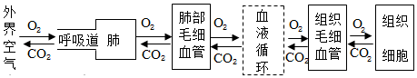

2017年北京市海淀区中考生物试题 · 选择题 第11、12、13、14、15题 · 对应解析
11. 下列营养物质中，能为人体生命活动提供能量的是（ ）
①糖类 ②脂肪 ③蛋白质 ④水 ⑤无机盐
A. ①③⑤B. ①②④C. ①②③D. ①②⑤
【答案】C
【解析】
【分析】食物中含有六大类营养物质：蛋白质、糖类、脂肪、维生素、水和无机盐，每一类营养物质都是人体所必需的。
【详解】食物所含的六类营养物质中，能为人体提供能量的是糖类、脂肪和蛋白质，同时这三类物质也是组织细胞的组成成分。其中糖类是最主要的供能物质，脂肪也是重要的供能物质，但是人体内的大部分脂肪作为备用能源贮存在皮下等处，属于贮备能源物质。蛋白质也能为生命活动提供一部分能量，但蛋白质主要是构成组织细胞的基本物质，是人体生长发育、组织修复和更新的重要原料。水、无机盐和维生素不能为人体提供能量，但对维持正常生命活动却有重要的意义。维生素既不能为人体提供能量，也不参与人体组织的构成，但它对人体的生命活动具有重要的调节作用。水和无机盐属于无机物，其中水既是人体重要的构成成分，也是人体各项生命活动进行的载体，营养物质和废物都必须溶解在水中才能被运输。C正确。
【点睛】了解各类营养物质的作用是解题的关键。
12. 从平衡膳食的角度来看，下列午餐食谱所选食物搭配最为合理的是（ ）
A. 炸鸡腿、薯条、奶油饼干、可乐
B. 面包、香肠、巧克力、牛奶
C. 馒头、红烧鱼、摊鸡蛋、玉米粥
D. 米饭、酱牛肉、炒豆角、鸡蛋西红柿汤
【答案】D
【解析】
【分析】为了满足人体每天对能量和营养物质的需要，人们的营养必须合理而全面。
【详解】我们所吃的食物能为人体提供糖类、脂肪、蛋白质、水、无机盐、维生素等，所以我们应均衡的摄取这些营养物质，本着粗细搭配、荤素搭配的原则，只有D项营养物质比较全面，ABC选项都不全面合理。故选D
【点睛】本题主要考查的是合理营养的含义，解题的关键是明确食谱中的营养要均衡、荤素搭配合理。
13. 人体进行呼吸时会呼出大量的二氧化碳，这些二氧化碳产生于（ ）
A. 细胞B. 血液
C. 肺泡D. 气管和支气管
【答案】A
【解析】
【分析】呼吸全过程包括四个方面：肺的通气、发生在肺泡内的气体交换、气体在血液中的运输、血液与组织细胞间的气体交换。呼吸的意义是有效地提供机体代谢所需的氧气，排出体内产生的二氧化碳。
【详解】人体进行生命活动所需要的能量是由细胞内的有机物在氧气的参与下被分解成二氧化碳时释放出来的，即有机物+氧气→二氧化碳+水+能量；产生的二氧化碳又通过呼吸排出，如图所示：

因此人体呼出的二氧化碳，其最终来源是组织细胞。
【点睛】人体排出的二氧化碳来源于组织细胞利用氧气分解有机物而产生的。
14. 中医常通过“切脉”来推知体内各器官的健康状况；病人在医院打吊瓶时，针头插入的是手臂上的一条“青筋”．这里所说的“切脉”的“脉”和“青筋”分别是指（ ）
A. 动脉和神经B. 静脉和动脉
C. 动脉和静脉D. 动脉和毛细血管
【答案】C
【解析】
【分析】脉搏即动脉搏动，随着心脏有节律性的收缩和舒张，动脉管壁相应的出现扩张和回缩，在体表浅动脉上可触到搏动。
【详解】脉搏即动脉的搏动。心脏收缩时，由于输出血液冲击引起的动脉跳动。正常人的脉搏和心率一致，医生可以根据脉搏诊断疾病。切脉一般取近手腕部的桡动脉，分寸、关、尺三部按察，掌后高骨处定为关，关前为寸，关后为尺；切脉必须在病人安静后才进行，病人手臂平放，手掌向上，医生用食、中、无名指的指尖分别平按在寸、关、尺三个部位，用力则由轻到重，用浮取、中取、沉取三种手法，体会脉象的情况，来诊断病情。人体内的血管有动脉血管、静脉血管、毛细血管三种类型。其中动脉血管管壁厚，弹性最大，管腔较小，血流速度快，其功能为将血液从心脏输送到全身各处去；静脉血管管壁较薄，弹性较小，管腔大，血流速度慢，其功能为将血液从全身各处输送到心脏去；毛细血管管壁最薄，只有一层上皮细胞构成，管腔最小，只允许红细胞呈单行通过，血流速度极慢，数量最多，其功能为物质交换的场所。动脉一般埋藏在身体较深的部位，不易从体表中看到，静脉有的埋藏较深，有的埋藏较浅，在体表容易看到，呈“青色”，俗称“青筋”。因此“切脉”的“脉”和“青筋”分别是指动脉和静脉。
【点睛】解答此类题目的关键是理解脉搏的概念以及知道血管的分布特点。
15. 某人因车祸急需输血，他的血型是AB型，原则上应该给他输（ ）
A. A型血B. B型血
C. AB型血D. O型血
【答案】C
【解析】
【分析】输血以输同型血为原则。例如：正常情况下A型人输A型血，B型血的人输B型血。
【详解】由分析可知，输血以输同型血为原则。但在紧急情况下，AB血型的人可以接受任何血型，O型血可以输给任何血型的人。如果异血型者之间输血输得太快太多，输进来的凝集素来不及稀释，也可能引起凝集反应。因此，输血时应该以输入同型血为原则。异血型者之间输血，只有在紧急情况下，不得已才采用，某人急需输血，其血型为AB型，因此首先考虑的应该是输同型血，即AB型的血。
【点睛】虽然AB血型的人可以接受任何血型，O型血可以输给任何血型的人，但首选的原则是输同型血。